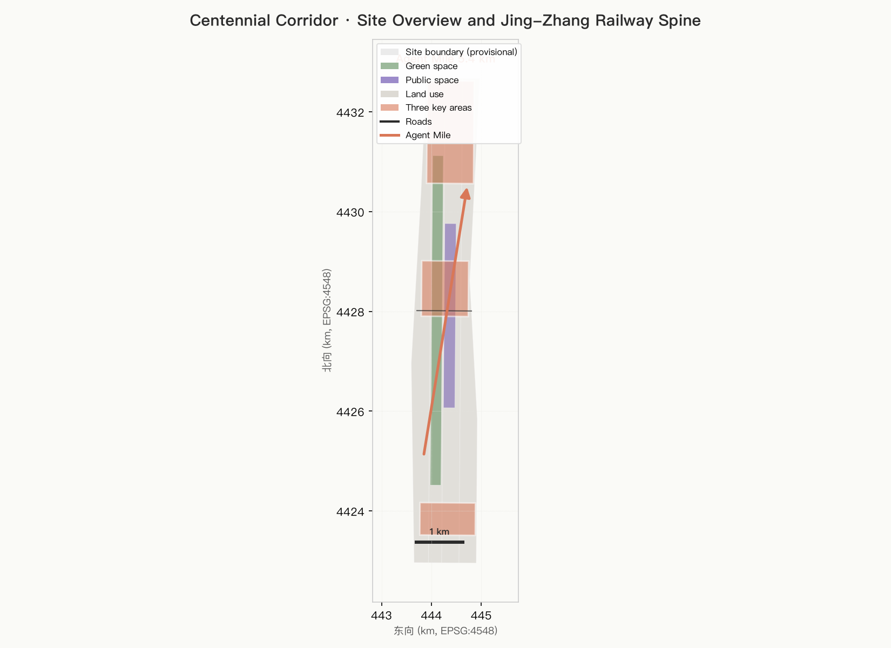
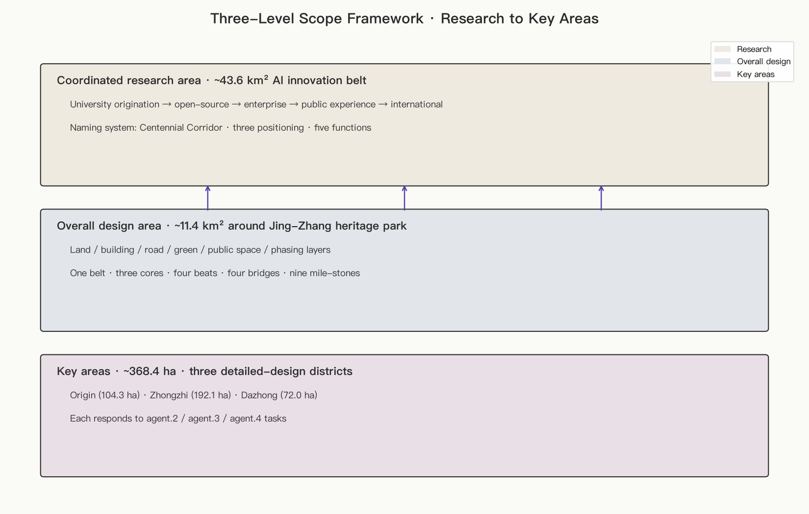
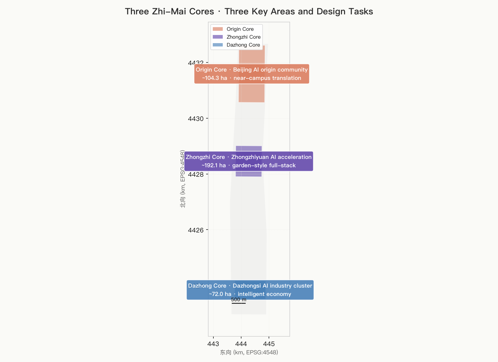
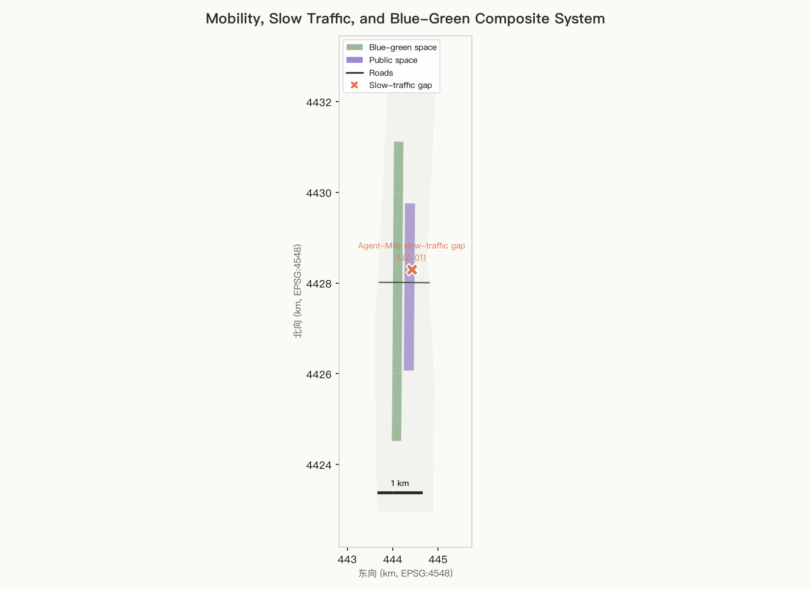
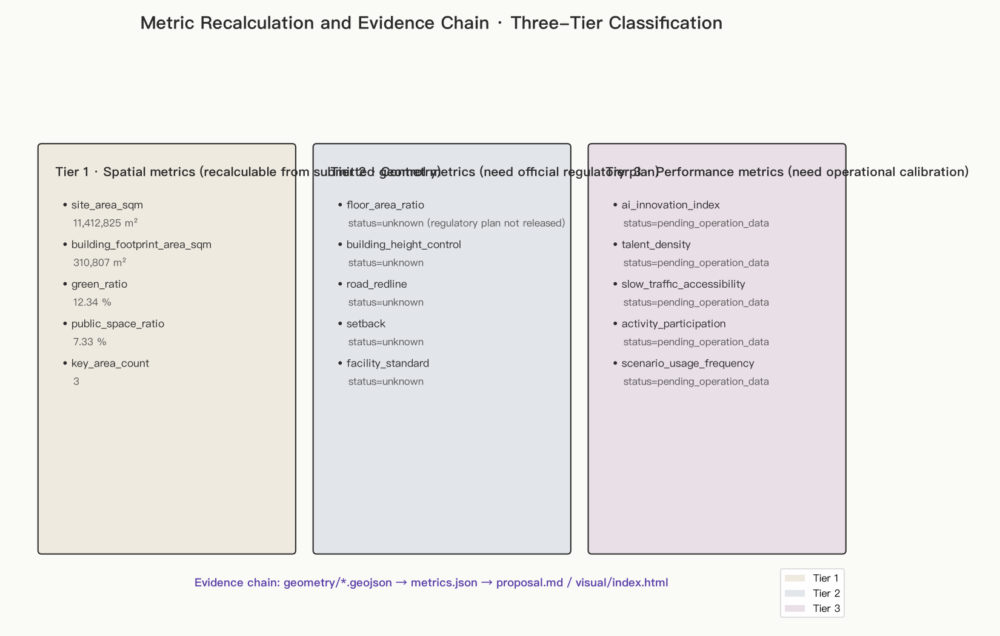

centennial-corridor
Centennial Corridor: The First Mile Where Agents Walk With The Railroad
Translator's note. This file is the English counterpart of
proposal.md. Section titles follow the formal English headings required bydocs/formal-submission-guide.md(Design Basis and Source List, Three-Level Scope Framework, Coordinated Research Area, Overall Design Area, Detailed Design of Key Areas, AI Innovation Ecosystem, Land Use and Building Strategy, Transport and Public Services, Blue-Green Network and Urban Character, Renewal Projects and Phasing, Metrics and Compliance, Risk and Compliance, References). Concepts remain aligned with the original Chinese; preferred terminology followsdocs/terminology-glossary.md.
Design Basis and Source List
This formal proposal takes as its primary authoritative source the Haidian District Announcement on the Centennial Jing-Zhang AI Innovation Belt International Urban Design Open Call (Beijing Municipal Bureau of Planning and Natural Resources, Haidian Branch) Source. It takes as machine-readable task basis the Agent-facing open-call taskbook extracted in brief/site-package/agent_taskbook.json (ten co-creation principles, three positioning lines, five functions, three-cores-two-wings framework, six required agent tasks, unified boundary clause) Source. The current geometry basis is brief/site-package/geometry/provisional_boundaries.geojson Source, and data/source_registry.json distinguishes formal-ready, background-only, and provisional-only sources Source.
The navigation layer data/processed/agent_fact_pack.md helps organise the three-level scope, three key areas, agent.1–agent.6, and the missing-data checklist Source. It does not replace original sources; factual judgments always cite the announcement, taskbook, or site package. The official announcement has not yet provided precise redlines or official KEY_AREA polygons, so the geometry/site_boundary.geojson and geometry/key_areas.geojson in this submission package are flagged geometry_role=provisional_constraint, official_boundary=false. They support generation, visualisation, and design discussion only, not official redlines, approval bases, precise area calculations, or statutory controls. When official polygons are released, the agent must rerun scaffold, self-check, and drawing generation Depth.
The package is organised in three levels Standard:
- Coordinated research area (~43.6 km² AI innovation belt): AI innovation ecosystem, strategic positioning, innovation chain, and future city form.
- Overall design area (~11.4 km² around the Jing-Zhang heritage park, 1–2 km buffer): urban renewal framework, industrial spatial layout, transport and municipal support, and cityscape control.
- Key areas (~368.4 ha in three detailed-design districts): functional mix, building scale, retain/renovate/demolish classification, public-space connectivity, and traffic organisation.
The three-level mapping is preserved in compliance_matrix.json so that announcement items 1.3, 1.4, 1.5 and agent.1–agent.6 each have section, layer, metric, drawing, and HTML evidence.

Source-use boundaries
- Formal-ready sources: announcement, taskbook, design tasks in the site package, provisional boundary, registered public materials.
- Background-only: press illustrations, narrative bounding boxes, concept images. Supporting narrative only; never an official boundary.
- Provisional-only: current default boundary and KEY_AREA. Must be downgraded; recalculated when official data arrive.
- Disallowed: commercial map screenshots, uncleared CAD/GIS, unauthorised portraits / trademarks / fonts / academic figures, internal government files, unauthorised non-public planning materials.
Three-Level Scope Framework
| Level | Scale | Design question | Proposal answer | Data anchors |
|---|---|---|---|---|
| Coordinated research area | ~43.6 km² AI innovation belt | How to organise AI innovation ecosystem and future city form | Build a five-beat innovation chain: "university origination → open-source collaboration → enterprise translation → public experience → international communication"; make naming system carry positioning, functions, and identity | compliance_matrix.json, standard_matrix.json, naming-system section |
| Overall design area | ~11.4 km² around the Jing-Zhang heritage park | How to land industrial space, renewal, transport/municipal, and cityscape in plans | Express land use, buildings, roads, green space, public space, and phasing layers in concert, forming "one belt · three cores · four beats · four bridges · nine 600 m mile-stones" | [data:geometry/land_use.geojson#LU-001], [data:geometry/roads.geojson#ROAD-001] |
| Key areas | ~368.4 ha | How to bring three districts to detailed-design depth | Each district has positioning, spatial moves, AI scenarios, and implementation dependencies | [data:geometry/key_areas.geojson#PROV-KEY-001/002/003] |
The three layers are not isolated drawings. Research decisions drive industrial chain and city-form judgments; overall design translates those judgments into renewal projects, spatial structure, and infrastructure capacity; key-area design verifies parcel-level feasibility for land use, buildings, transport, public space, and AI application scenarios. No area, ratio, scale, or project count that cannot be recalculated from structured data may be written into a formal conclusion Depth.

Coordinated Research Area: Industry and Future City Research
The core task at this level is to build a world-class AI innovation ecosystem. The proposal maps Haidian's universities (Beihang, BUPT, Tsinghua, Peking University, etc.), leading enterprises, compute/data/governance factors, incubators, unicorns, and technology service resources into a five-beat innovation chain Source Standard.
Global AI innovation case studies (5–8 references)
| Case | Reference value | Translation into this proposal |
|---|---|---|
| US Mission Bay (UCSF + tech cluster) | University hospital next to startups | Origin Core "near-campus translation street" |
| South Korea Pangyo Techno Valley | Government-led enterprise HQs + pilot spaces | Zhongzhi Core "safety-governance sandbox" |
| UK Silicon Fen (Cambridge) | University–enterprise–VC–incubator ecosystem | Dazhong Core "international roadshow salon" |
| Israel Tel Aviv AI corridor | Compact dense network + cross-border capital | "Agent Mile" capital channel |
| Singapore one-north | Mixed functions + international talent | Dazhong Core "international talent district" |
| Japan Kashiwa Smart City | Public-private partnership + data governance framework | "Zhi-Mai Four Beats" data-governance beat |
| Finland Otaniemi | University town as incubator | Origin Core "campus-as-incubator" |
| Shenzhen Nanshan AI belt | Tight manufacturing–AI coupling | "Zhi-Mai Four Bridges" coexistence bridge |
Future city form
Future-city research answers how AI reshapes work, life, sociability, learning, transport, and public services Depth. This proposal lands AI transport, continuous green space, innovation-service facilities, and an international living-working atmosphere into locatable districts, nodes, corridors, and scenarios:
- Locatable districts: three cores, each with a distinct function.
- Locatable nodes: nine 600 m milestones with Agent-pilgrimage themes.
- Locatable corridors: Jing-Zhang heritage spine, four bridges, Zhongzhi Core – Qinghe interface.
- Locatable scenarios: see the ten scenario cards in "AI Innovation Ecosystem, Personas, and AI+ Scenarios".
Role of naming / logo / visual identity in the ecosystem
Naming serves the recognisability of the three positioning lines but is not a slogan: through three cores, four beats, four bridges, and the Agent Mile, the narrative lands in physical space that can be read, walked, photographed, and commemorated Source. Logo direction and font choices are specified in the next section.
Overall Concept, Naming System, and Logo Direction
Overall concept
Jing-Zhang Zhi-Mai Symbiotic Belt (Centennial Corridor) — using the Jing-Zhang railway heritage park as spine, weaving three spatial segments ("century-old engineering", "AI origin", "youth life") into one 5.4 km symbiotic belt. Zhan Tianyou left the engineering legacy of "China's first independently-designed trunk railway" in 1909; Haidian has since clustered Beihang, BUPT, and the AI origin community on both sides. The corridor lets agents, developers, residents, and urban heritage run side by side on the same stretch; the century-old engineering becomes the common starting line for public space and industrial ecology in the AI era.
Naming system (five levels)
1. Jing-Zhang Zhi-Mai (brand / Belt) — pun: agents-as-vessels + city innovation pulse; English "Centennial Corridor". 2. Three Zhi-Mai Cores — Origin Core (Beihang/BUPT/Xueqing Road), Zhongzhi Core (Qinghe – Zhongzhi Garden), Dazhong Core (Dazhongsi Station). 3. Four Zhi-Mai Beats — Tsinghua-Yuan · Beginning, Wudaokou · Tide, Zhichun-Lu · Lively, Dazhongsi · Homecoming. The four beats also structure night vitality, youth activity, and public-art programming. 4. Four Zhi-Mai Bridges — Century Bridge (Tsinghua-Yuan old station → park north end, cultural origin), Open-Source Bridge (origin community open-source release hall), Coexistence Bridge (Zhongzhi – Qinghe interface), Echo Bridge (Dazhongsi terminal station integrated plaza). 5. Agent Mile — The Jing-Zhang railway from Tsinghua-Yuan to Dazhongsi runs ~5.4 km, partitioned into nine 600 m milestones, each with its own Agent-pilgrimage theme (open source, night, robotics presence, education, ethics, etc.). Agent names, contributor GitHub IDs, and milestone pillars pair one-to-one, forming commemorable, iteratable urban assets.
Logo direction (text draft)
- Form: a "double-rail, double-bridge" primitive — two parallel rails lifted by a curve in the centre, symbolising the century-old railway and the AI agent meeting. Wordmark "智脉共生" + English "Centennial Corridor".
- Palette: graphite grey #2B2B2B (rail steel), Tsinghua purple #5B3FA8 (Haidian innovation), low-saturation orange-red #D97757 (Agent-node highlight).
- Extension rule: keep the same wordmark across signage, paving, temporary installations, and digital assets. Milestone pillars and the open-source corridor use a simplified logo.
- Forbidden: no copy of city / park / corporate logos; no unauthorised font, trademark, or portrait; no conflation with cultural identity systems Source.
Overall Design Area: Urban Renewal and Regulatory-Plan-Level Urban Design
The overall design area is required to reach regulatory-plan-level urban design depth Standard Standard. The proposal sets out overall renewal spatial structure, inefficient-space identification, renewal project list, implementation policy, industrial mix, spatial organisation, total building scale, and integrated carrying capacity.
geometry/land_use.geojson covers the design boundary without gaps or overlaps Spatial data; geometry/buildings.geojson expresses retained/renewed building footprints Spatial data; geometry/roads.geojson expresses micro-circulation, slow-traffic, and rail interchange Spatial data; metrics.json recalculates core areas, ratios, and layer counts Metric.
Overall design supports transport, rail, municipal, and supporting facilities. The proposal puts forward spatial layout and implementation paths around rail-station integration, road micro-circulation, non-motorised parking, parking supply, innovation service platforms, talent life services, new-type infrastructure, distributed energy, and on-device compute. For building height, intensity, road redlines, setbacks, and facility standards, where official control conditions are not yet available, items are uniformly written as "pending confirmation of regulatory conditions"; agent-inferred values must not masquerade as approved indicators Depth.
Detailed Design of Key Areas
Detailed design of three key areas is mandatory Depth.

Three Zhi-Mai Cores at a glance
| Key area | Positioning | Spatial moves | AI industrial / operational scenarios | Evidence |
|---|---|---|---|---|
| Origin Core (Beijing AI origin community, ~104.3 ha) | Near-campus translation and talent community | Stitch campus, park, and block by slow-traffic; provide release, talent services, residential, and open-source spaces | Open-source release hall, achievement release, talent special-zone services, near-campus incubation | [data:geometry/key_areas.geojson#PROV-KEY-001] |
| Zhongzhi Core (Zhongzhiyuan AI acceleration area, ~192.1 ha) | Garden-style full-stack autonomous innovation block | Strengthen Qinghe interface, industrial display, low-carbon innovation exchange, and external-traffic organisation; green space carries open test and standard-governance display | Self-developed model testing, standard workshops, safety-governance display, low-carbon compute experience | [data:geometry/key_areas.geojson#PROV-KEY-002] |
| Dazhong Core (Dazhongsi AI industry cluster, ~72.0 ha) | Urban intelligent-economy and international-exchange block | Anchor Dazhongsi station integration, four-quadrant pedestrian connectivity, business services, and key-enterprise public-environment renewal | Agent and smart-terminal display, content consumption, data-factor and international roadshow | [data:geometry/key_areas.geojson#PROV-KEY-003] |
The three polygons appear in geometry/key_areas.geojson. Where official polygons are missing, provisional polygons are used; the proposal, HTML, sources, assumptions, and self-check all note that they cannot serve as formal scoring or approval basis. compliance_matrix.json covers announcement items 1.5.3.1, 1.5.3.2, 1.5.3.3 respectively.
Provisional geometry caveat (sync 2026-08-12 with upstream #1029): Per the maintainer's report, the centroid of the
PROV-KEY-003provisional polygon lies near Beijing North Station, ~2.26 km from Dazhongsi Station (see issue #1029). This proposal reuses thePROV-KEY-003ID from upstream as-is ingeometry/key_areas.geojson, only citing the area (~72.0 ha, aligned with the announcement) and the name ("Dazhongsi AI industry cluster", aligned with announcement 1.5(3)3)); the spatial narrative explicitly points to the "four-quadrant area around Dazhongsi metro station" and does not depend on the provisional polygon's coordinates. After official polygons are released, scaffold / self-check / recalculation must be re-run.
AI Innovation Ecosystem, Personas, and AI+ Scenarios
The proposal establishes spatial-demand personas covering R&D offices, open-source collaboration, achievement release, enterprise services, talent housing, social learning, consumption, sport/leisure, and international exchange Depth. AI+ scenarios target transport, services, consumption, healthcare, education, legal, life-services, etc. Each scenario states service objects, spatial location, data sources, privacy boundary, human-review mechanism, and operating body.
Personas (≥5 categories)
| Persona | Typical need | Spatial response | Self-check boundary |
|---|---|---|---|
| Open-source developers | Release, collaboration, testing, community reputation | Origin Core release hall, public code wall, night collaboration space | No individual behaviour tracking; activity data aggregated only |
| Startup teams | Low-cost office, compute entry, product test bed | Zhongzhi Core shared test bed, on-device compute service points, standard-governance consultation | Compute and data services require separate authorisation |
| Visiting enterprise guests | Display, business, international reception, talent recruitment | Dazhong Core international roadshow salon, rail-station access, public space around key enterprises | Enterprise marks and cases must be cleared |
| Surrounding residents | Commute, leisure, community services, low-disturbance renewal | Jing-Zhang park slow-traffic loop, embedded community services, graded night lighting and activities | Resident profiles not used for commercial targeting |
| University faculty/students | Translation, cross-university collaboration, daily slow-traffic | Campus–park slow-traffic stitching, translation驿站, AI education experience points | Campus data and research outputs require authorisation |
Ten AI scenario cards
| # | Scenario card | Spatial carrier | Design statement | Operating body (concept) |
|---|---|---|---|---|
| 01 | Open-source release hall | Origin Core | Release, code contribution display, small roadshows for universities, communities, and startups | Open-source community foundation (concept) |
| 02 | Safety-governance sandbox | Zhongzhi Core | Standards, safety evaluation, and red-team testing as visitable, bookable, supervised display and collaboration nodes | Standards body (concept) |
| 03 | On-device compute station | Overall-design-area nodes | Combined with public service, enterprise service, and low-carbon energy strategy; prototype new-type infrastructure for deepening | Public-private partnership (concept) |
| 04 | AI slow-traffic navigation | Jing-Zhang park vitality belt | Explainable signage and low-intrusion sensing help identify slow-traffic gaps, congestion nodes, and accessibility needs | Public operator (concept) |
| 05 | Dazhongsi international roadshow salon | Dazhong Core | Display, negotiation, media release, international exchange for agents, smart terminals, content-consumption enterprises | Business district operator (concept) |
| 06 | Qinghe low-carbon innovation corridor | Zhongzhi Core – Qinghe interface | Green space, stormwater, walking/cycling, and AI display combined as park public living room | Park operator (concept) |
| 07 | Near-campus translation street | Origin Core | Incubation, display, legal/IP/financing services for university translation | Campus partnership (concept) |
| 08 | Data-factor reception hall | Dazhong Core | Compliance, authorisation, audit-based display of data-factor and digital-asset circulation service interface | Regulatory sandbox (concept) |
| 09 | AI life-service demonstration street | Community/commercial interface | Healthcare, education, legal, life-service AI+ scenarios landing on operable small-block street space | Street office + enterprises (concept) |
| 10 | Global AI activity-week route | Belt-wide public-space system | Walkable, communicable experience route spanning heritage, open-source community, industry display, international roadshow | Public operator + brand owners (concept) |
AI industrial test/verification scenarios (≥3)
- Robotic low-speed delivery: the last 3 of 9 Agent-Mile segments (night segments), 22:00–6:00, in the heritage park under mandatory human escort.
- AI slow-traffic gap identification: low-intrusion sensing on the Jing-Zhang spine (no face capture), identifies pedestrian congestion and accessibility gaps; aggregated statistics only.
- Model red-team evaluation: supervised, auditable, reproducible red-team testing inside the Zhongzhi Core safety-governance sandbox; summary results opened to the public.
Agent-generated AI governance advice follows data minimisation, public sources, explainability, and human review Source. Urban agents can help identify slow-traffic gaps, public-space heat, facility maintenance, enterprise-service demand, and activity safety risks, but do not replace planning approval, output unauthorised individual profiles, or claim official implementation commitments Depth.
Land Use, Building Scale, and Retain-Renovate-Demolish Strategy
Land use follows publicly available standards for territorial-survey, planning, and use-control classification, forming a complete, closed, seamless land-use partition Standard. Building strategy distinguishes retain / renovate / renew / new-build / pending-confirmation and specifies footprint, function, scale, cityscape, roof, massing, and height control levels Depth Depth. Where existing buildings, ownership, regulatory-plan, and engineering conditions are missing, only methods and pending-calibration lists are proposed; no fabricated retain-renovate-demolish conclusions are produced.
Building-scale and intensity metrics must agree with metrics.json and the layers Metric. Where total building scale, FAR, building height, density, green ratio, setback, and building control lines lack official conditions, items are uniformly written status=unknown, with reasons and assumption text explaining pending conditions and recalculation paths after official data arrive Depth.
Transport, Rail, Municipal Infrastructure, and Public Services
The transport plan responds to announcement requirements for rail-station integration, road micro-circulation, slow-traffic gap, external traffic, parking, non-motorised parking, and green transport. Priority coverage: North 5th Ring, Jing-Zhang park cross-ring nodes, Wudaokou, Qinghua-East-Road-West, Dazhongsi station, and transport links around key enterprises Depth.
Road and slow-traffic layers stay within the submission boundary and cross-check against public space, green space, industry nodes, and key areas; where the submission boundary is provisional, transport conclusions are also discussion-only Spatial data Spatial data.

Municipal and public service facilities cover AI industrial-service facilities, innovation-service platforms, talent-life-service facilities, new-type infrastructure, distributed energy, on-device compute, and traditional municipal infrastructure integration Depth. The proposal states facility standards, spatial layout, service radius, operating mode, and phasing logic. Missing pipeline, energy, drainage, flood-control, and fire-protection data are listed as prerequisites for formal deepening.
Blue-Green Network, Public Space, and Urban Character
The blue-green plan uses the Jing-Zhang heritage park vitality belt as backbone, integrating Qinghe River, Xiaoyue River, surrounding universities, enterprises, and community mobility needs into a north-south and east-west connected pedestrian and cycling network Depth. The plan identifies slow-traffic gaps, cross-ring nodes, and the park's south and north landscape nodes, proposing parking, sports, innovation exchange, science testing, application display, and public-service composite use.
The urban-character plan integrates Jing-Zhang railway heritage, Zhongguancun innovation culture, and AI innovation culture, leveraging Tsinghua-Yuan old station, Beijing Film Academy, and other cultural resources Source. City tone, building character, roof form, massing, interface, and public-art guidance must not produce pseudo-precise control lines without cultural-protection or regulatory-plan basis.
Renewal Projects, Implementation Policy, and Phasing
The implementation plan forms an auditable renewal project list specifying location, type, function, responsible body, dependencies, stage, risk, and evaluation indicators Depth Depth. Policy covers renewal coordination, space supply, operating mechanisms, industrial service, public participation, data governance, and property-rights coordination. geometry/phasing.geojson expresses phasing extents Spatial data.
| Project ID | Project name | Type | Main dependency | Spatial placement |
|---|---|---|---|---|
| JZ-01 | Jing-Zhang park slow-traffic gap stitching | Public space / transport | Road redline, under-bridge space, traffic organisation review | Agent Mile · full length |
| JZ-02 | Zhongzhi Core Qinghe innovation interface | Blue-green / industrial display | River blue line, ecology, flood-control | Four Bridges · Coexistence Bridge |
| JZ-03 | Origin Core near-campus translation street | Urban renewal / industrial service | Campus boundary, ownership, ground-floor use | Three Cores · Origin Core |
| JZ-04 | Dazhongsi station four-quadrant pedestrian connection | Rail integration / slow traffic | Rail station, intersection, municipal pipeline | Four Bridges · Echo Bridge |
| JZ-05 | AI public service and on-device compute nodes | New infrastructure / public service | Energy, compute, security, operating body | Three Cores · cross-core |
| JZ-06 | Global AI activity-week public route | Operation / brand | Public-space permit, activity safety, copyright clearance | Four Beats · full length |
| JZ-07 | Agent-Mile nine milestone pillars | Public space / brand | Landmark permit, naming clearance | Agent Mile · full length |
| JZ-08 | Open-source corridor and public code wall | Public space / brand | Campus / enterprise data clearance, font clearance | Four Bridges · Open-Source Bridge |
Metrics, Area Recalculation, and Compliance Matrix
The metric system covers at least overall design area, key-area area, green and public-space ratios, building footprint, renewal project count, AI scenario nodes, slow-traffic connectivity, industrial-space indicators, talent-service indicators, and self-check status Depth. All "known" metrics must be recalculable from GeoJSON or trusted sources; "unknown" metrics must carry reasons and prerequisites for formal submission.

For formal deepening, the agent classifies every metric into three tiers:
- Tier 1: spatial metrics directly recalculable from submitted geometry (boundary area, green ratio, public-space ratio, building footprint, phasing area).
- Tier 2: control metrics that need official regulatory plan or taskbook attachments (FAR, building height, density, setback, road redline, facility standard).
- Tier 3: performance metrics that need continuous operational or industrial calibration (AI innovation index, talent density, industrial-service satisfaction, slow-traffic accessibility, activity participation, scenario usage frequency).
The compliance matrix is the task-responsiveness master file. Each announcement item and agent_taskbook task maps to report sections, layers, metrics, drawings, HTML pages, sources, assumptions, and self-check items. Missing coverage of any mandatory item among 1.3, 1.4, 1.5, or agent.1–agent.6 disqualifies the proposal from formal professional scoring.
AI Public Space, Pilgrimage Landmarks, and Brand System
This section responds to agent.4 (public space, pilgrimage landmarks) and agent.5 (cultural narrative, brand system) Source.
Pilgrimage landmarks (≥3)
1. Jing-Zhang Zero Point (Tsinghua-Yuan old station) — Zhi-Mai origin. Marking "China's first independently-designed trunk railway, 1909". The first segment of all Agent naming starts here. 2. Open-source corridor (within Origin Core) — Rolling display of Agent naming and GitHub IDs. Low-glare, low-energy steel with local stone; open-source font for wall text. 3. Agent-Mile milestone pillars (nine 600 m segments) — 100 stone pillars, one per segment per year, rolling contributor IDs; low-carbon concrete and recycled rail steel. 4. Echo Tower (Echo Bridge in Dazhong Core) — Dazhongsi station integrated plaza installation combining bell sampling and open-source speech model.
Honour display system
- Permanent commemoration: selected proposals + Agent names + contributor GitHub Names → inscribed stones / milestone pillars / open-source corridor rolling list Source.
- Annual update: rolling selected list each year, public review.
- Contributor naming rights: milestone-pillar numbers and corridor walls use contributor-naming namespaces (e.g.
agent-{github-id}-{slug}).
Cultural narrative (agent.5)
Jing-Zhang century-old cultural belt: Jing-Zhang railway (1909, Zhan Tianyou) → Tsinghua-Yuan old station → clustered universities along the line → contemporary AI innovation. Zhongguancun innovation culture: 1980s electronics street → Zhongguancun entrepreneurship avenue → AI origin community → open-source ecosystem. AI new culture: open-source collaboration, AI-native creation, commemorable contributors, agents co-creating with humans.
The three narratives weave through the four Zhi-Mai Beats: Tsinghua-Yuan · Beginning (century heritage) → Wudaokou · Tide (university innovation) → Zhichun-Lu · Lively (youth life) → Dazhongsi · Homecoming (international echo).
Wayfinding, signage, symbol system
- Wayfinding: double-rail double-bridge primitive kept consistent across paving, block signage, temporary installations. Open-source Chinese/English fonts recommended (separately cleared).
- Signage: milestone pillars / open-source corridor / four bridges / three cores each have independent signage but share the same wordmark.
- Forbidden: no distortion of historical facts; no culture-as-decoration; no unauthorised portraits, trademarks, academic figures; no conflation with the overall Belt logo system Source.
Global AI Innovation Activity System and Long-Term Operation
This section responds to agent.6 (annual activity system, operation mechanism) Source.
Annual activity system (concept)
| Activity | Frequency | Spatial placement | Conversion path |
|---|---|---|---|
| Global AI activity week | Annual | Agent Mile full length | International developers → project landing → investment attraction |
| Open-source release festival | Quarterly | Open-Source Bridge / Origin Core | University achievements → incubation → investment |
| Zhi-Mai night walk | Monthly | Night segments of four beats | Youth participation → public art → community building |
| Agent-Mile 9-segment theme month | Rolling | 9 milestone pillars | Agent pilgrimage → naming rights → long-term assets |
| Red-team evaluation open day | Bi-annual | Zhongzhi Core safety-governance sandbox | Public participation → standard setting → governance discourse |
Developer community operation (concept)
- Open-source governance: open-source corridor public code wall uses open-source licence; naming follows
agent-{github-id}-{slug}. - Contributor archive: every Agent / contributor's naming, PR history, and Issue discussion enters the long-term archive as public-knowledge urban assets Source.
- Long-term iteration: after taskbook and community feedback updates, Agents can regenerate proposals and merge into PRs; milestone-pillar numbers and open-source corridor rolling lists update synchronously.
Scenario-open operation (concept)
- AI+ scenario open day: monthly, opens the 10 scenario cards' spatial nodes to the public, co-organised by Agents and operating bodies.
- Test / verification scenarios: robotic delivery, AI slow-traffic navigation, and model red-team evaluation open to developers and the public under controlled, supervised, auditable conditions.
Public experience and city-landmark operation (concept)
- Agent-Mile trail: 5.4 km, walkable / rideable / runnable urban heritage trail.
- Pilgrimage landmarks: four node groups as long-term public art operations.
- Night vitality: graded lighting and graded activity across the four-beat night segments.
International communication and recruitment-conversion (concept)
- International communication: English counterpart published in sync; Agent-Mile theme months in English / Chinese for global developers and urban researchers.
- Recruitment conversion: from activity participants to project landing, from developers to enterprise landing, from Agent naming to long-term contributor archive.
All activities, operations, and recruitment mechanisms are written as "concept suggestion / reference scheme / available for professional team deepening"; they must not be written as confirmed government decisions or implementation arrangements Source.
Risk, Copyright, and Compliance
Risk matrix (1–5)
| Risk dimension | Score | Note |
|---|---|---|
| Data privacy | 2 | AI scenarios follow data minimisation; no individual behaviour tracking |
| Implementation complexity | 4 | Multi-actor (university, enterprise, municipal, community); long-term coordination |
| Public acceptance | 3 | Pilgrimage landmarks and night activities need public participation |
| Operation & maintenance cost | 3 | Milestone pillars and open-source corridor need long-term maintenance |
| Policy uncertainty | 3 | Naming rights and clearance for milestone pillars and corridor need further clarification |
| Spatial controversy | 3 | Cross-campus boundary, cross-enterprise ownership stitching spaces |
| Technology maturity | 3 | On-device compute and red-team evaluation still need standardisation |
| Equity and inclusion | 2 | Naming system open to all contributors, not institution-restricted |
Copyright and compliance
- All images, drawings, icons, data, and code assets declare source, licence, and clearance status in
sources.jsonorreport/copyright_statement.md. - HTML pages do not load remote scripts, remote map tiles, remote fonts, iframes, forms, or external APIs, and do not track reviewer behaviour.
- AI-generated images, videos, audio must not masquerade as site photos, resident opinions, official boundaries, measured data, or approval conclusions.
- Generated media record tool/model, reference materials, licence, portrait and privacy boundaries, and provide alt text, captions, or transcripts.
Known data gaps
- Official boundary / KEY_AREA / regulatory plan / road redline / parcel ownership / municipal pipeline / cultural protection / public service gaps (see
data/processed/missing_data_checklist.csvandassumptions.json). - Any conclusion lacking official regulatory plan, road redline, ownership, municipal, fire-protection, or cultural-protection conditions is downgraded to a pending item; full professional cross-check is preserved in the standards matrix Depth.
References
- brief/public-brief.md
- brief/site-package/design_brief.json
- brief/site-package/allowed_design_space.json
- brief/site-package/agent_taskbook.json
- brief/site-package/enums/
- brief/site-package/ranges/planning_limits.json
- brief/site-package/standards/standards.json
- brief/site-package/standards/references/
- data/source_registry.json
- data/processed/agent_fact_pack.md
- data/processed/project_scope_summary.csv
- data/processed/agent_task_requirements.csv
- data/processed/source_use_matrix.csv
- data/processed/missing_data_checklist.csv
- Complete machine index: see
sources.json,metrics.json,compliance_matrix.json,standard_matrix.json, anddesign_depth_matrix.json. - Beijing Municipal Bureau of Planning and Natural Resources, Haidian Branch, Announcement on the Centennial Jing-Zhang AI Innovation Belt International Urban Design Open Call.
- Source entries follow site-package registration; full attribution and licence in the structured source list Source.
v0.1.3 changelog 2026-08-12T02:49:19.021834